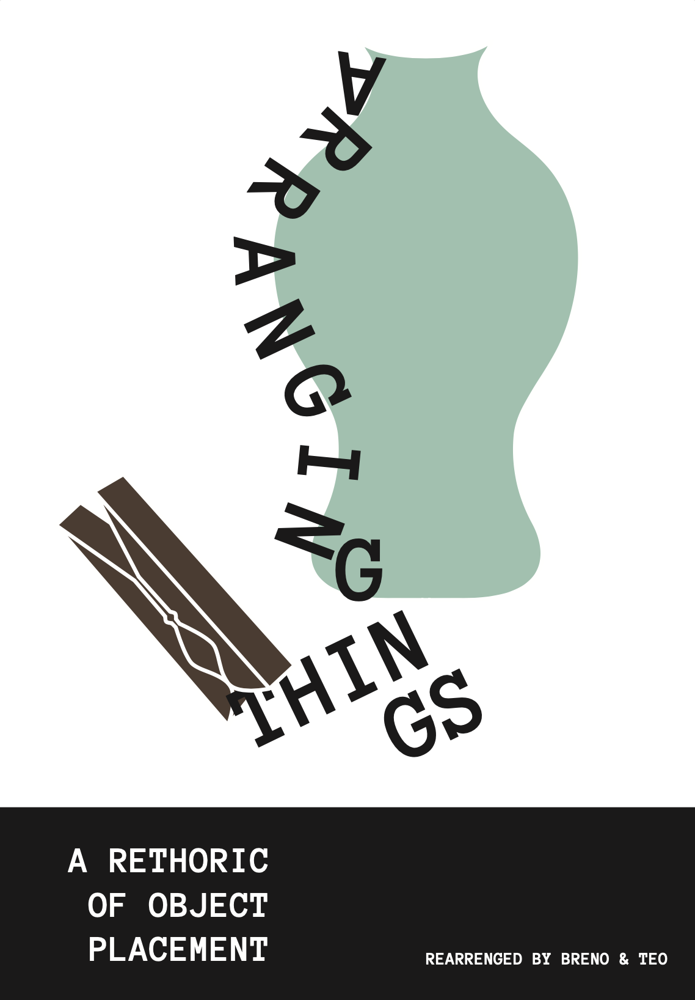
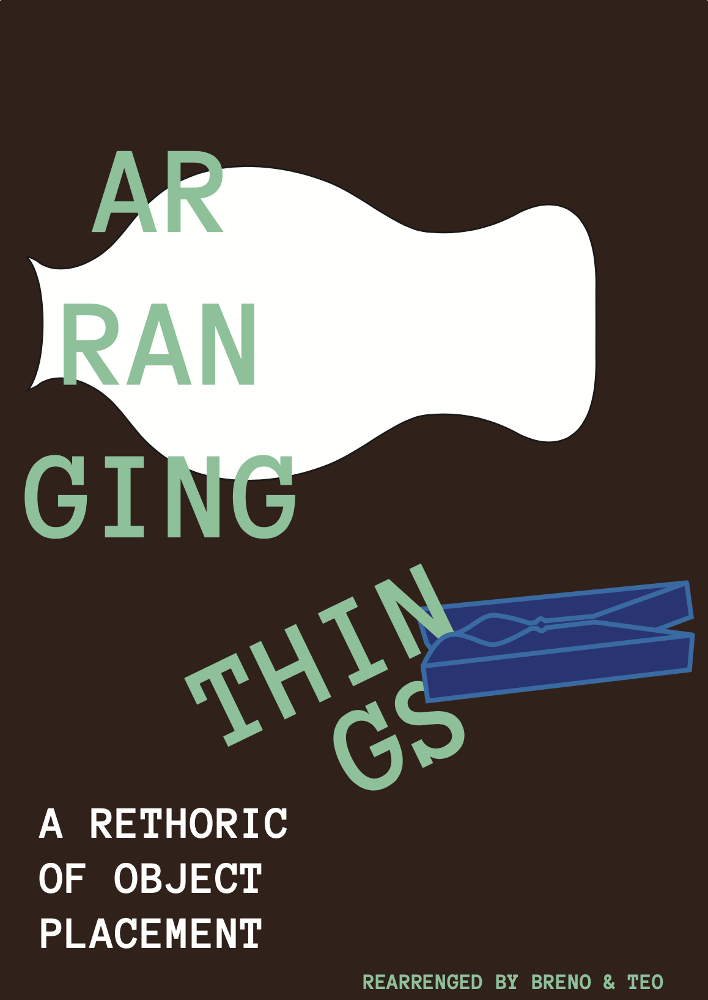
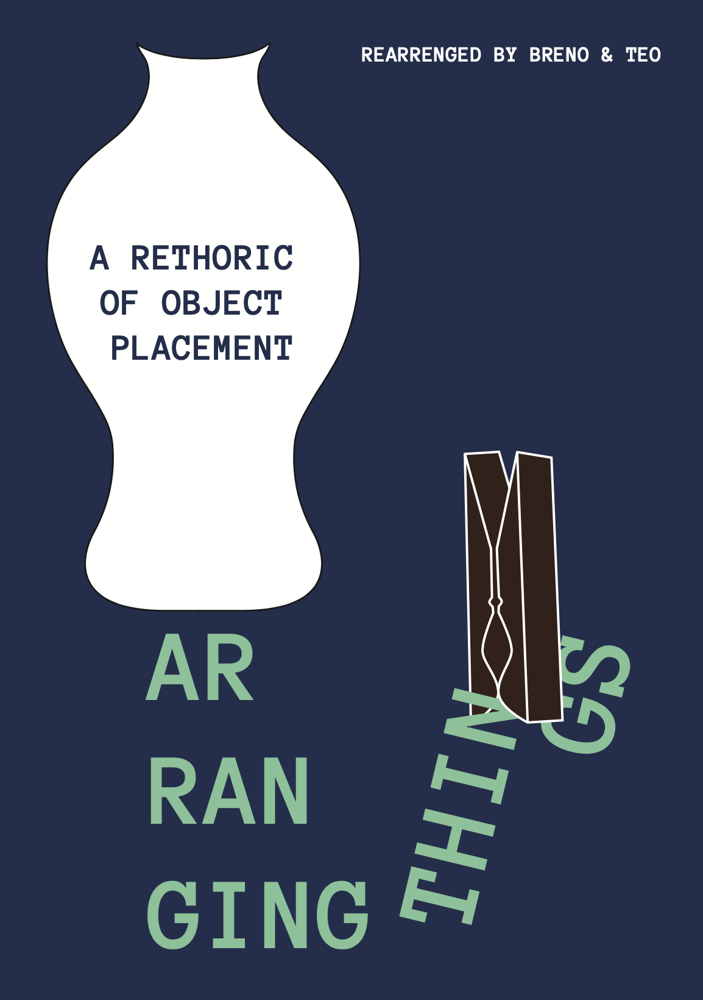
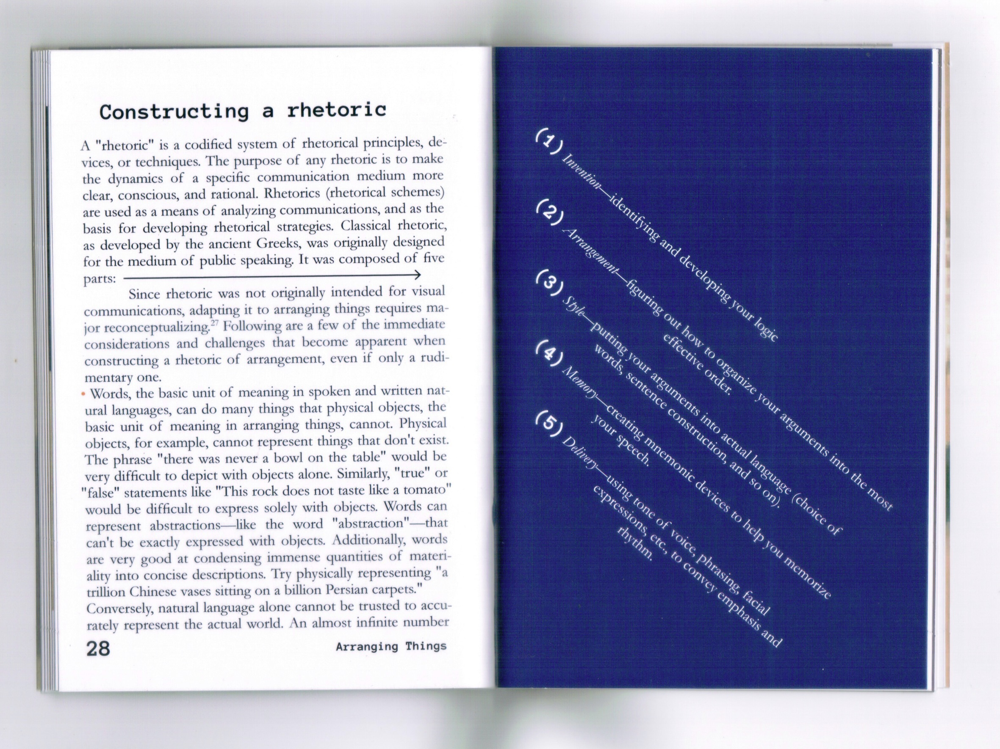
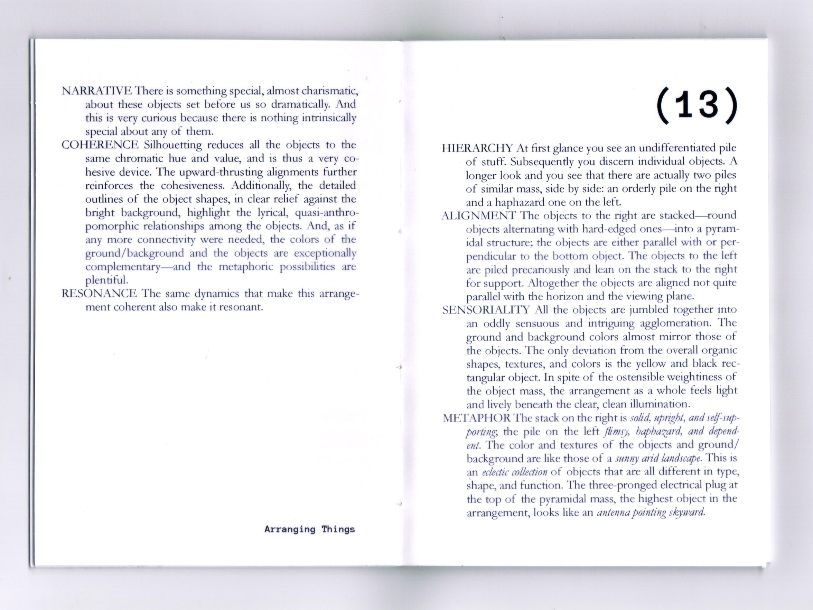
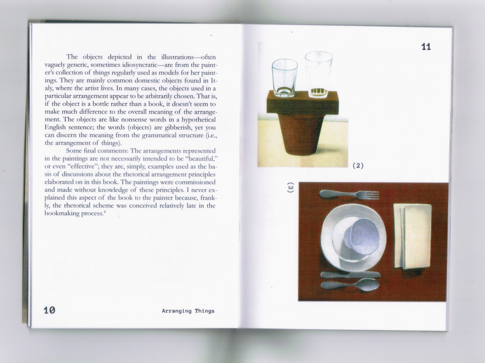
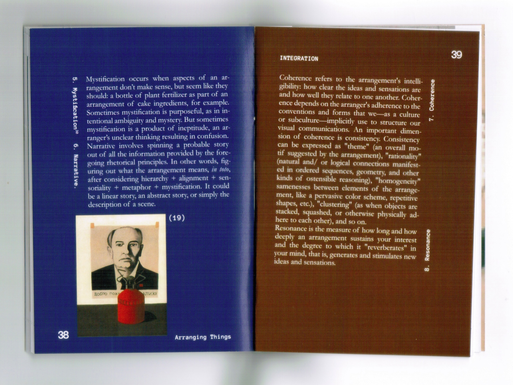
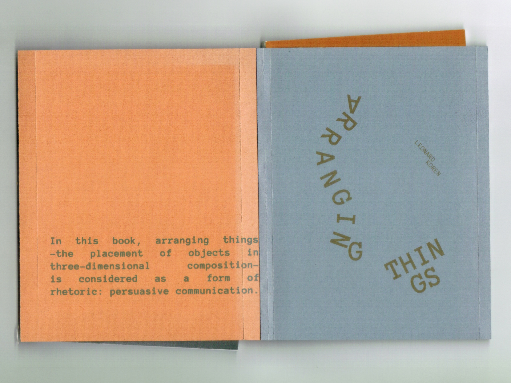

arranging things
2024
pequena proposta para uma nova edição de Arranging Things (2003), de Leonard Koren. miolo impresso em offset 120g e sobrecapa impressa em papéis variados reaproveitados e encontrados no lixo.



desenhado a partir de diversos pdfs encontrados
online, com o objetivo de suprir a falta de
disponibilidade física do livro nacionalmente
e driblar os altos preços do mercado de usados.
sobre como arranjar as coisas.




